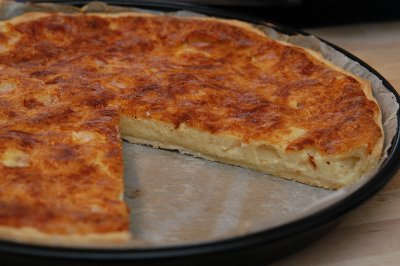

| Zutaten für 4-6 Personen: | |
| 1 Tl | Butter für das Blech |
| 1 Paket | Kuchenteig |
| 2 El | Mehl |
| 150g | Schinken (1 dicke Scheibe) |
| 2 | Eier |
| 1dl | Rahm |
| 1dl | Milch |
| 2 El | Mehl |
| 1 Prise | Salz |
| wenig | Muskatnuss |
| 1 Prise | Pfeffer |
| 100g | Emmentaler, gerieben |
| 150g | Greyerzer, gerieben |
Zuerst wird der Backofen auf 220°C vorgeheizt. Etwa eine Viertelstunde bevor Du den Kuchen hineinschieben willst, stellst Du den Backofen an.
Dann nimmst Du ein grosses, rundes Kuchenblech und butterst es aus. Achtung: die Ränder nicht vergessen.
Jetzt nimmst Du den Teig und das Wallholz. Auf der gut abgeriebenen Tischfläche überstreust Du den Teig auf beiden Seiten mit Mehl und beginnst ihn auszuwallen.
Immer schön gleichmässig, bis er etwas grösser ist als die Kuchenblechfläche.
Dann hebst Du ihn vorsichtig hoch und legst ihn auf das Blech. An den Rändern drückst Du ihn fest.
Was zu viel ist, schneidest Du weg.
Nun wischst Du die Tischplatte wieder sauber. Dann schneidest Du auf einem Holzbrett den Schinken in etwa 1cm dicke Würfel und verteilst diese schön gleichmässig auf dem Kuchenboden.
Die zwei Eier schlägst Du in eine Schüssel und verrührst sie mit dem Rahm, der Milch, dem Mehl und den Gewürzen.
Dann mischst Du den Emmentaler und den Greyerzer darunter.
Und jetzt verteilst Du diesen Brei sorgfältig über die Schinkenwürfel.
Jetzt schiebst Du das Blech auf die unterste Rille in den Ofen.
Der Kuchen hat eine Backzeit von etwa 40 Minuten.
Ein Tipp: Schaue ab und zu in den Backofen. Wenn Du siehst, dass die Oberfläche zu dunkel wird, legst Du ein Stück Alufolie darüber.
"Hüt choch ich", Rezeptbuch für Kinder, Schweizerische Käseunion AG, Bern, Erstauflage 1981
Eine ausgezeichnete Käsewähe. Mein 28cm Backblech ist vielleicht eine Spur zu breit. Ein engeres Blech mit mehr Höhe käme eventuell näher an die unübertroffenen Käsewähen vom Buchman im ShopVille heran. RE July 2012.
@LINKBACK_TAG@ @WAKELOCK@